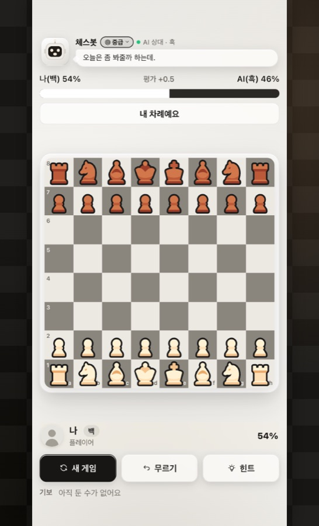
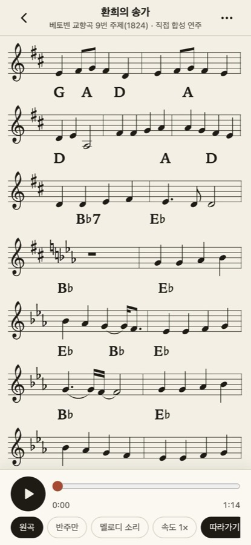
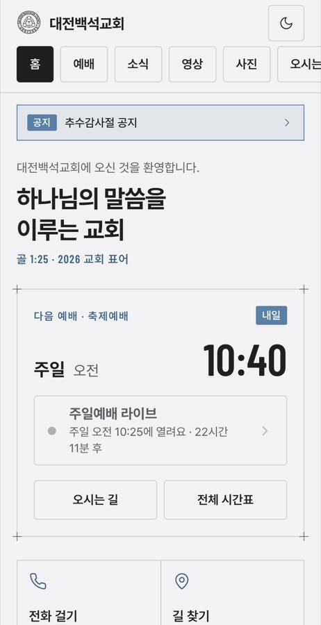
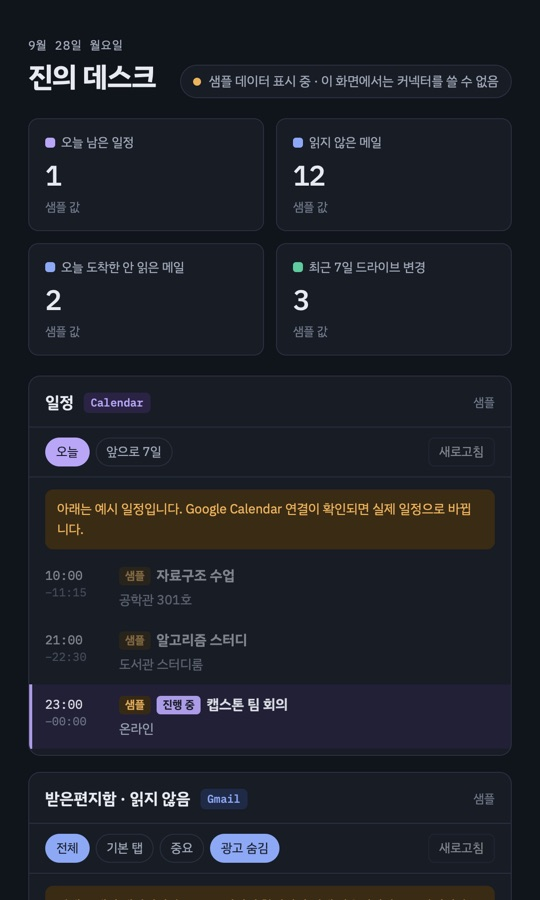

출시
토스 미니앱
앱인토스와 원스토어에 올리고, 게임물 등급분류(GRAC)부터 스토어 심사까지 직접 진행했습니다.
한눈에
출시
토스 미니앱
앱인토스와 원스토어에 올리고, 게임물 등급분류(GRAC)부터 스토어 심사까지 직접 진행했습니다.
속도
약 55초
4분짜리 곡을 분석해 코드표와 오선보로 만드는 데 걸리는 시간(M1 Pro).
정확도
틀린 답 0
자비스를 27개 대화·68턴으로 검진한 결과. 첫 글자까지 중앙값 약 3초.
보안
키는 서버에만
브라우저 번들에 노출되던 API 키와 프롬프트를 Spring Boot 서버로 옮겼습니다.
운영
죽으면 재시작
모든 상시 서비스는 systemd로 돌고, 개인 데이터 화면은 사설망에만 열어 둡니다.
검증
실제로 돌려서
알림은 실제로 띄우고, 자동 실행은 재부팅해서 확인하고, 레이아웃은 수치로 잽니다.
Selected Work
01 · 모바일 게임 · 출시·운영 중
토스 안에서, 바로 한 판.
토스 앱 안에서 바로 두는 체스. 앱인토스와 원스토어에 출시해 운영하고 있습니다.

체스를 처음 배우는 사람이 부담 없이 AI와 둘 곳이 마땅치 않았습니다.
Stockfish 엔진을 웹 워커로 돌려 난이도별 AI, 형세 막대, 힌트·무르기를 만들고, 같은 코드를 안드로이드로 감싸 원스토어에도 올렸습니다. 게임물 등급분류(GRAC)부터 스토어 심사까지 직접 진행했습니다.
토스 웹뷰마다 화면 높이가 달라 체스판이 잘리는 문제가 반복됐습니다. 스크린샷 눈대중 대신 getBoundingClientRect로 실측해 보드 크기를 빈 공간에 맞춰 계산하도록 바꿨고, 빌드 산출물(.ait) 안의 CSS를 직접 열어 반영 여부를 확인하는 습관을 만들었습니다.
02 · 음원 분석 · 머신러닝
링크 하나로, 악보까지.
유튜브 링크나 음원을 넣으면 박자·코드·조·보컬 멜로디를 분석해 폰에서 보는 코드표와 오선보를 만들어 줍니다.

교회 반주를 준비할 때 악보가 없는 곡이 많아 매번 귀로 따야 했습니다.
Demucs로 악기를 분리하고, beat_this로 박·마디, BTC로 박별 코드 확률, torchcrepe로 보컬 음높이를 뽑아 16분음표 격자로 양자화했습니다. 결과는 ABC 악보로 바꿔 abcjs로 그리고, 조옮김·카포 추천·코드 직접 고치기를 붙였습니다. 4분짜리 곡이 약 55초에 끝납니다(M1 Pro).
곡 중간에 박이 2배·반으로 튀어 마디가 어긋났습니다. 박 단위를 시간상 다수 쪽으로 통일하고, 마디 위치를 Viterbi로 찾게 해 3/4↔4/4 전환과 조바꿈까지 표기했습니다. 정답 악보 2곡과 대조하며 표기 높이·박 단위를 고쳤습니다.
03 · 백엔드 · 캡스톤 팀 프로젝트
키를 브라우저에서 걷어내다.
감정을 분석해 음악을 추천하는 웹앱에서, 프론트가 Gemini·YouTube를 직접 부르던 구조를 Spring Boot 서버로 옮겼습니다.
퇴근길에 노을을 보는데 마음이 차분해졌어요.
감정 분석하기 →차분하고 여유로운 상태예요. 마음을 가라앉히는 곡을 골랐어요.
API 키와 프롬프트가 브라우저 번들에 그대로 노출되고, 검증·후처리가 프론트에 흩어져 있었습니다.
Gemini 호출 전부와 YouTube 호출 6곳을 서버로 옮겨 프론트에서 키를 완전히 제거하고, 프롬프트는 서버의 템플릿에 가뒀습니다. YouTube 할당량은 Caffeine 캐시로 아끼고, 기록·좋아요는 Firebase 토큰으로 인증한 뒤 MySQL(JPA)에 저장합니다.
컨트롤러→서비스→리포지토리를 실제 HTTP 경로로 통과하는 통합 테스트를 작성했습니다.
브라우저 │ /api/* ▼ Spring Boot ├─ Gemini 키·프롬프트는 서버에만 ├─ YouTube Caffeine 캐시 └─ MySQL Firebase 토큰 인증
04 · 웹사이트 · 운영 자동화
라이브가 끝나면, 사이트도 압니다.
다니는 교회의 홈페이지를 처음부터 만들어 운영합니다. 폰에서 보기 좋은 앱형 화면이 기본입니다.

주일예배 라이브가 끝나도 사이트는 고정 시각(12:30)까지 "라이브 중"으로 남아 있었습니다.
처음엔 Cloudflare 워커에서 유튜브 상태를 읽었지만 구글이 클라우드 IP를 막아(429) 실패했습니다. 그래서 라즈베리파이에 감시 서비스를 두고 상태 기계로 판정합니다 — live는 즉시, offline은 2번 연속 + 시작 시각 이후에만 게시해 일시 오류로 꺼지지 않게 했습니다. 결과는 Pages의 별도 브랜치에 live.json으로만 올립니다.
방송 없는 주일·방송 있는 주일·차단·게시 실패 재시도·재시작 후 재게시를 자가시험으로 돌리고, 공지바는 8가지 데이터 변형(0개·7개·긴 제목·기간 경계)으로 확인한 뒤 배포했습니다.
05 · macOS 앱 · 위젯
탭 서너 개를, 한 화면에.
Gmail·캘린더·드라이브·나스를 한 화면에 모은 개인 맥 대시보드와 WidgetKit 위젯.

메일·일정·파일을 보려고 매번 탭 서너 개를 오갔습니다.
Claude로 만든 HTML 대시보드를 WKWebView에 담고, 커넥터 대신 Google API에 직접 연결했습니다. Xcode 프로젝트 없이 swiftc만으로 앱·위젯을 빌드하고, 위젯 그림도 위젯 코드를 그대로 써서 렌더링합니다.
Running Daily
홈서버에서 24시간 돌아가는 다섯 가지. 하나씩 골라 보세요.
AI · RAG
옵시디언 노트를 검색해 답하고, 모르는 건 웹에서 배워 노트로 남기는 비서. 맥에서는 로컬 LLM(Ollama)이 먼저 답하고 실패하면 NVIDIA API로 넘기며, 라즈베리파이 운영기는 systemd로 상시 실행됩니다.
임베딩 임계값이 너무 높아 의미검색이 사실상 꺼져 있던 걸 실측으로 찾아 0.5→0.24로 재보정. 27개 대화·68턴 검진에서 틀린 답 0, 첫 글자 중앙값 약 3초.
Python · Ollama · RAG · 다중 사용자 권한
데이터 · 검증
토스 Open API·네이버·DART에서 매수 전 체크리스트 데이터를 뽑아 매일 브리핑 웹으로 보여 줍니다. 매매 판단은 코드가 하지 않습니다.
신호별 20거래일 전진 검증이 기준(8건·구간 4개·상승/하락장 각 2번)을 채웠는지 표시하고, 내가 누른 관심·보류·제외를 20거래일 뒤 시장 대비로 자동 채점합니다.
Python · pandas · 표준 라이브러리 서버 · systemd
자동화 · 모의투자
종목의 시초가 범위 돌파를 홈서버가 감시해 폰으로 알려 주고, 정해 둔 규칙대로 모의 계좌에 주문까지 내는 자동매매를 만들고 있습니다. 미장은 Alpaca 모의투자, 국장은 한국투자증권 모의 계좌에 연결합니다.
주문 전에 반드시 위험 검사를 통과해야 하고(1회 최대 손실·하루 한도), 기본값은 꺼져 있어 파일 하나로만 켭니다. 실전 계좌 자동 주문은 만들지 않았고, 실전 전환은 제가 직접 합니다.
Python · Alpaca API · 한투 모의 API · ntfy · systemd
개발 도구
제가 띄운 Claude 세션들이 프로젝트별 방에 앉아 일하는 모습을 실시간으로 보여 주는 사무실 화면. 세션이 올린 결재를 폰에서 버튼으로 누르면 그 세션이 이어서 진행합니다.
상태는 전역 훅 7종의 실제 이벤트로만 바뀌게 해 "거짓 상태"를 만들지 않습니다. 명령 전체·파일 내용은 보내지 않습니다.
Node.js · Python · Hooks · Tailscale
인프라
위 서비스들이 사는 곳. 모든 상시 서비스는 systemd로 죽으면 재시작되고, 개인 데이터가 있는 화면은 Tailscale 사설망에만 열어 둡니다. 노트는 Syncthing으로 맥과 동기화합니다.
비밀값 파일은 동기화 제외 목록에 먼저 넣고, 나스 데이터는 외장하드로 백업했습니다.
Linux · systemd · Tailscale · Syncthing · Docker
Index
Principles
“됐을 거예요” 대신, 실제로 돌려서 확인합니다.
알림은 실제로 띄우고, 자동 실행은 재부팅해서 확인합니다. 레이아웃은 눈대중 대신 수치로 잽니다.
다음 사람이 이어받을 수 있게 남깁니다.
프로젝트마다 인계 문서 맨 위에 "지금 상태와 다음 할 일"을 두고, 같은 실수를 반복하지 않도록 교훈을 기록합니다.
비밀값과 개인정보를 먼저 지킵니다.
토큰·비밀번호는 코드와 노트 밖(키체인)에 두고, 개인 데이터가 있는 화면은 사설망에만 엽니다.